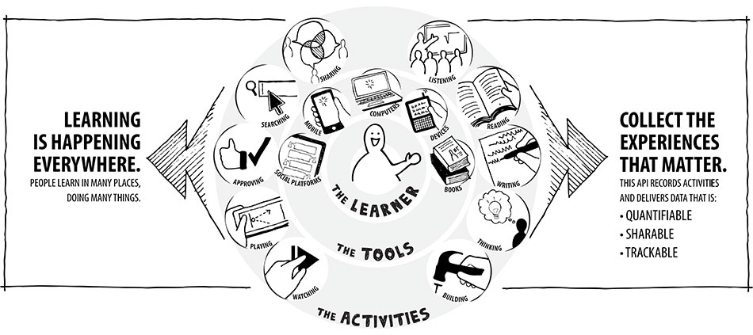
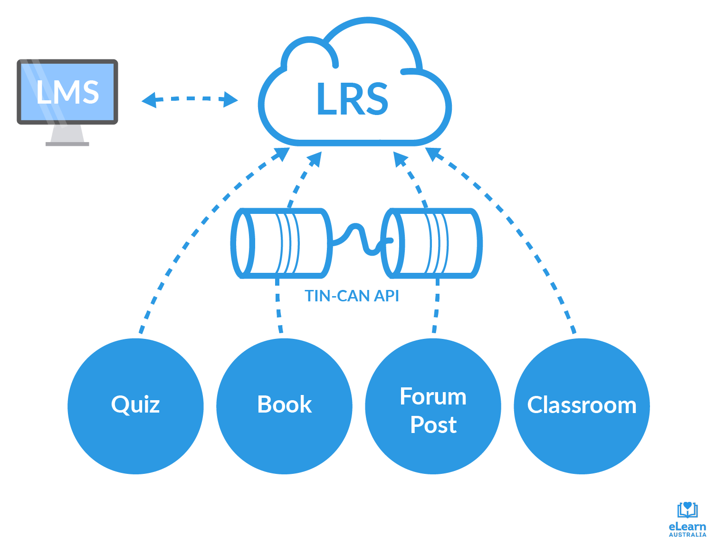

LRS - это подход к хранению информации о прогрессе обучающегося,
который включает себя идею извлечения данных из разных
источников, таких как: сайты, мобильные приложения и даже
активность в реальной жизни.

LRS и LMS
Имеют разные задачи и могут работать вместе.

Достоинства
Множественные источники через xAPI.
Аналитика работы учащегося.
Отслеживание работы даже в повседневной жизни.
Недостатки
Отсутствие администрирование курсов и пользователей.